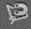

Виртуальный тренажер: Работа с инструментами выделение в Photoshop
Используя инструмент «Магнитное лассо»  ((L) необходимо вырезать следующий пазл.
6/10
Для этого:
- Выберите инструмент «Магнитное лассо».
- Нажмите на изображение, чтобы установить первую точку привязки. Точки привязки закрепляют границу выделенной области в определенном месте.
- Отпустите кнопку мыши или удерживайте ее, а затем переместите указатель вдоль нужного края.
- Самый последний сегмент границы выделенной области остается активным. При перемещении курсора активный сегмент закрепляется на самом заметном крае изображения в пределах ширины обнаружения, установленной на панели параметров.
- Если граница была поставлена не на том крае, щелкните кнопкой мыши один раз для установки точки привязки вручную. Продолжайте обводить край и добавляйте точки привязки в случае необходимости.
- Чтобы закрыть границы с магнитным сегментом, дважды щелкните кнопкой мыши или нажмите «Enter». Чтобы закрыть границы вручную, переместите курсор к начальной точке и щелкните кнопкой мыши.
- С помощью инструмента «Перемещение» (V) передвиньте пазл на зеленое поле.

Остальные пазлы выделяются аналогичным образом.